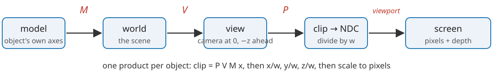
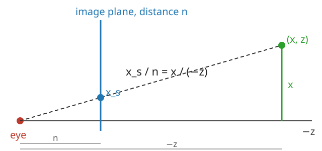

A 3D object is stored either as a surface (polygons) or as a volume (voxels). Today: how each becomes an image on a screen. This unit and the next follow polygons; then textures (how the graphics card stores and samples images); then voxels.
A mesh: vertices, an indexed list of triangles, winding and normals.
Coordinate spaces: model → world → view → clip → screen, one 4\times4 matrix each.
The camera as a change of basis, and perspective from similar triangles.
Conventions: those of OpenGL/WebGL (the camera looks down -z, depth after projection in [-1, 1]; some systems use [0, 1]).
Slides titled The math give the formulas and proofs; the ideas are complete without them.
Surfaces as meshes
A mesh is two arrays:
a vertex array: a position (x, y, z) per vertex, plus optional attributes (normal, colour, texture coordinate);
a triangle list: three vertex indices per triangle.
A cube: 8 vertices, 12 triangles. Stored as a “triangle soup” (three positions per triangle) it needs 36 positions; indexed, 8 positions and 36 small integers.
A closed mesh has about twice as many triangles as vertices: 10^6 triangles share about 5\cdot10^5 vertices.
Why triangles? Three points are always flat and convex, and a value given at the corners has one natural interpolation inside (next unit).
Winding, normals, manifolds
The ordera, b, c of a triangle’s indices is its winding. Seen from the front, the corners go counter-clockwise.
The face normal\mathbf n = (\mathbf b - \mathbf a)\times(\mathbf c - \mathbf a) points out of the front side (right-hand rule).
Consistent orientation: neighbouring triangles use their shared edge in opposite directions. Then all normals point outwards, and “inside” is defined.
Manifold: every edge belongs to exactly two triangles, and the triangles around a vertex form one disc. Not manifold: three triangles on one edge; two cubes touching at a corner.
Tools need this: smooth normals, inside/outside tests, the volume formula of the marching-cubes day, and back-face culling (next unit) all assume a consistent, closed mesh.
The math: why a closed mesh has F \approx 2V
Euler’s formula for a closed surface without holes (a sphere-like mesh): V - E + F = 2.
Each triangle has 3 edges and each edge belongs to 2 triangles, so 3F = 2E. Substituting E = \tfrac32 F:
V - \tfrac32 F + F = 2 \quad\Longrightarrow\quad F = 2V - 4.
For a surface with g handles (a torus has g = 1), V - E + F = 2 - 2g and F = 2V - 4 + 4g: still about 2V.
Memory of an indexed mesh with 32-bit floats and indices: 12V + 12F \approx 12V + 24V = 36V bytes (plus 12V for normals).
From 3\times3 to 4\times4
Recall the images unit: in 2D, \mathbf x' = A\mathbf x + \mathbf t became one3\times3 matrix by adding a coordinate 1. In 3D the same trick gives 4\times4 matrices:
\begin{bmatrix} \mathbf x' \\ 1 \end{bmatrix} = \begin{bmatrix} A & \mathbf t \\ \mathbf 0^\top & 1 \end{bmatrix} \begin{bmatrix} \mathbf x \\ 1 \end{bmatrix}.
Points get w = 1; directions (normals, light directions) get w = 0: translation does not move a direction.
A chain of moves is a product, applied right to left. “Rotate 90° about z, then move by (1, 0, 0)” is T R, and sends the point (1, 0, 0) to (1, 1, 0). In the other order, R T sends it to (0, 2, 0).
Rotations do not interpolate linearly (the average of two rotation matrices is not a rotation); animation uses quaternions, not covered here.
A chain of coordinate spaces

Model space: the object’s own axes (the house’s floor centred at the origin).
World space: the scene. The model matrixM places, turns and scales the object.
View space: the camera’s axes; the view matrixV.
Clip space, then NDC: the projectionP, then division by w.
Screen: the viewport scales [-1, 1] to pixels.
All the vertices of one object get the same product P\,V\,M: one matrix per object per frame, the same work for every vertex.
The camera as a change of basis
A camera has a position \mathbf e (eye), looks at a target \mathbf g, and has an “up” direction. Its own axes:
forward\mathbf f = from the eye towards the target; right\mathbf r = perpendicular to forward and up; up\mathbf u' = perpendicular to both.
View space writes every point in these axes, with the eye at the origin: right = +x, up = +y, and forward = -z (the camera looks down -z).
The view matrix does what the camera’s placement undoes: if a matrix C puts a camera into the world, then V = C^{-1}. Moving the camera left is the same as moving the whole world right.
Orbiting the camera = rotating \mathbf e about \mathbf g: the drag in every 3D demo of the course.
The math: the look-at matrix
\mathbf f = \frac{\mathbf g - \mathbf e}{\lVert \mathbf g - \mathbf e\rVert}, \qquad \mathbf r = \frac{\mathbf f\times\mathbf u}{\lVert \mathbf f\times\mathbf u\rVert}, \qquad \mathbf u' = \mathbf r\times\mathbf f.
The rows of R are \mathbf r^\top, \mathbf u'^\top, -\mathbf f^\top (orthonormal), and
V = \begin{bmatrix} R & -R\,\mathbf e \\ \mathbf 0^\top & 1 \end{bmatrix}, \qquad V\begin{bmatrix}\mathbf e\\1\end{bmatrix} = \begin{bmatrix}\mathbf 0\\1\end{bmatrix}.
The camera’s placement is C = \begin{bmatrix} R^\top & \mathbf e \\ \mathbf 0^\top & 1\end{bmatrix} (its columns are the camera’s axes in world coordinates, and its position). Since R^{-1} = R^\top for an orthonormal R, C^{-1} = \begin{bmatrix} R & -R\mathbf e\\ \mathbf 0^\top & 1\end{bmatrix} = V.
Example: \mathbf e = (0, 0, 5), \mathbf g = \mathbf 0, \mathbf u = (0, 1, 0) gives \mathbf f = (0, 0, -1), \mathbf r = (1, 0, 0), \mathbf u' = (0, 1, 0), R = I and V = translation by (0, 0, -5).
Perspective by similar triangles

A point at depth -z in front of the eye lands on an image plane at distance n at
Twice as far away = half as big. Dividing by z is not linear, so no matrix can do it. The trick: the matrix copies -z into the fourth coordinate w, and the hardware divides by w afterwards (the perspective divide).
The math: the perspective matrix
We also need a depth for hiding surfaces (next unit). After the divide every coordinate has the form (row of P)·\mathbf x / (-z), so the new depth must be z_\text{ndc} = A + B/z. Choose A, B so that the near plane z = -n goes to -1 and the far plane z = -f to +1:
A - \frac{B}{n} = -1, \quad A - \frac{B}{f} = 1 \quad\Longrightarrow\quad A = \frac{f + n}{f - n}, \;\; B = \frac{2fn}{f - n}.
With a vertical field of view \theta and aspect ratio a (width/height), let s = 1/\tan(\theta/2):
Example: n = 1, f = 3: A = 2, B = 3, so z_\text{ndc} = 2 + 3/z; the point at z = -2 gets depth 0.5, past the middle. Depth is not linear in distance.
Try it: follow a vertex through the spaces
Orthographic projection
Orthographic: drop the depth instead of dividing by it. P just scales and shifts a box [l, r]\times[b, t]\times[-n, -f] to the cube [-1, 1]^3; w stays 1.
Parallel lines stay parallel; size does not depend on distance.
Used where measurements matter: technical drawings, most microscopy viewers, and maximum-intensity projections (unit 4).
Dolly zoom: move the camera back and narrow the field of view together. The subject keeps its size (d\tan(\theta/2) constant: from d = 4, \theta = 40° to d = 9, \theta = 18.4°), but the background grows: perspective depends on the distance, not on the zoom. Far away with a narrow field of view approaches orthographic.
Clip space and the frustum
What the camera sees is a truncated pyramid, the view frustum, between the near and far planes. After P (before the divide) it is the region
-w \le x \le w, \qquad -w \le y \le w, \qquad -w \le z \le w,
and after the divide it is the cube [-1, 1]^3 (NDC, normalised device coordinates).
Triangles outside are dropped; triangles crossing the boundary are clipped. This happens in clip space, before the divide.
Why before: a vertex behind the camera has w < 0; dividing flips it to the other side of the screen. The near plane cuts the triangle first (next unit).
The viewport then maps x_\text{ndc} \in [-1, 1] to [0, \text{width}] pixels (and y likewise).
From pixels back to rays
Run the chain backwards: a pixel is not a point but a ray from the eye through the pixel.
(P V)^{-1} applied to the pixel at NDC depth -1 and at +1 gives two points on the ray. Volume rendering (unit 4) and picking a vertex with the mouse both start like this.
One camera cannot tell how far along the ray a point is: depth is lost. Two cameras can (stereo, epipolar geometry): the inverse problem of reconstructing geometry from images, an elective of its own.
Summary
A mesh = vertices + indexed triangles; winding gives the front side and the normal (\mathbf b - \mathbf a)\times(\mathbf c - \mathbf a); closed meshes have F \approx 2V.
4\times4 homogeneous matrices: points w = 1, directions w = 0; products apply right to left.
model \xrightarrow{M} world \xrightarrow{V} view \xrightarrow{P} clip \xrightarrow{\div w} NDC \xrightarrow{\text{viewport}} screen.
The view matrix is the inverse of the camera’s placement (a change of basis to the camera’s axes).
Perspective = divide by distance; the matrix puts -z into w. Depth after the divide is A + B/z: not linear.